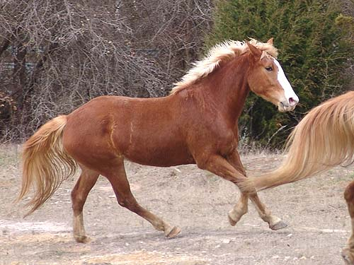
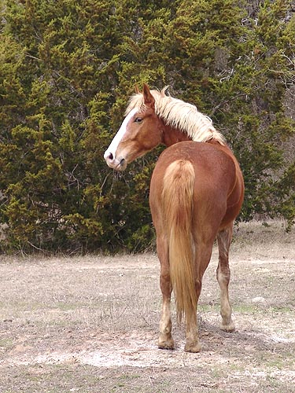

Angel Angel and Wiley went out to the parents'
place while
the hunt season finishes up. They're coming
4, and still
quite leggy (which makes me think they
still have some growing
to do). I figure running around on pasture
for a month will be
good for them. After that Angel will probably
start back in training
and we'll see what she needs to learn
to be a good hunt horse.
I see the draft in the head, joints
and feet. She's not a small horse as is, but I remember that Emma (my Shire)
didn't bulk up until she was 4/5.
I really like her temperment so far.
She came down from St Louis on Saturday, and Sunday she loaded right back
up in my Brenderup for the trip to the parents.
Yippee, she can stretch down at the
trot....
I was encouraged to see that as she
relaxed, she was willing to lengthen her trot and not go from short trot
to canter.
Here she shows that flying driving
trot that Bob does. Not sure if she'll do it under saddle.

She canters easily in the pasture.
I bet that she doesn't mind it under saddle, either.
She's got a pretty decent walk for
her breeding.

I'm not partial to mares, but if she
matures like I think she will, this one will be impressive.